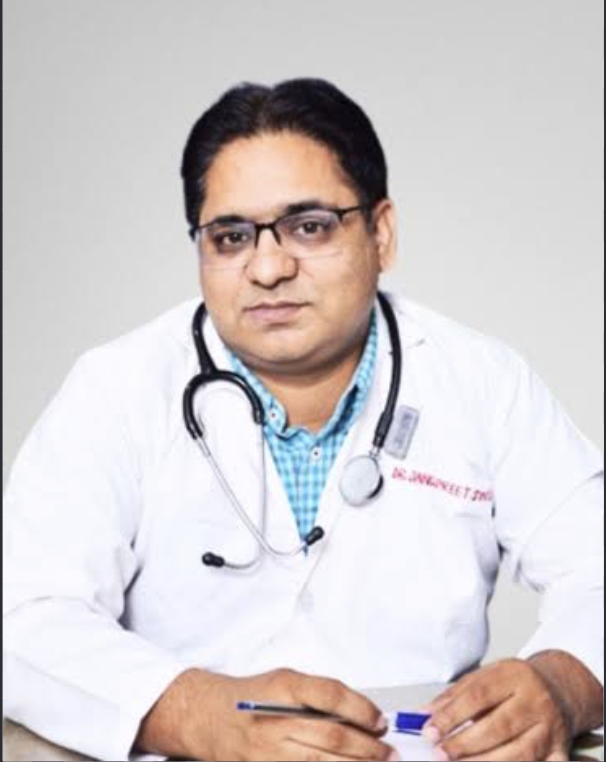

HAIR RESTORATION · JALANDHAR
Hair restoration,
approached personally.
Explore hair restoration and transplant care at Multani Plastic Surgery Centre.
Explore hair restoration ↗Hair transplant · Cosmetic surgery · Reconstructive care · Lasers
PLAN YOUR VISITRequest a consultation ↗PRIVATE PRACTICE · JALANDHAR
Explore surgical and laser services at Multani Plastic Surgery Centre, led by Dr. Jangpreet Singh Multani.

PLASTIC & RECONSTRUCTIVE SURGEON
MBBS · MS · MCh (Plastic Surgery)
His training includes general surgery at Dayanand Medical College, Ludhiana, and plastic surgery at NHL Medical College, Ahmedabad. His areas of interest include cosmetic, hair restoration and reconstructive surgery.
SERVICES
Explore the centre’s hair restoration and transplant information.
See the laser services listed by the centre, including hair reduction and scar-related care.
Read about the cosmetic procedures and related information featured by the clinic.
Explore the centre’s information about reconstructive procedures and care.
PATIENT REVIEWS
I went for a surgery from Dr. Multani and he did a fantastic Job. He is a very good Surgeon and a very nice person as well. He did my Surgery at a very good Price. I Recommend Everyone to go for him for all kinds of Plastic Surgeries.
BIKRAM TEJII didn’t get the chance to send my review. I came from USA to get the surgery. My hair transplant went very smooth and painless and very quick! I don’t think anyone can do better surgery than then my hair came out very nice specially my hairline
JAZZ SINGHAwesome 👍 Excellent service! And Dr. Multani is really a great surgeon, I went for lipo, and rhinoplasty, he really did a great job . I'm very happy with the results. Thank u Dr. Multani 🙏🙌
MANDEEPVery good doctor behaviour very good staff very good hospital
I am extremely happy with the service.
Although the reception staff and other hospital staff is amazing.
Patient experiences are individual and do not guarantee a particular result. Google review excerpts are attributed to their public profiles.
YOUR FIRST STEP
Speak with the clinic to ask about services, discuss a visit, or find directions.
Contact the centre ↗